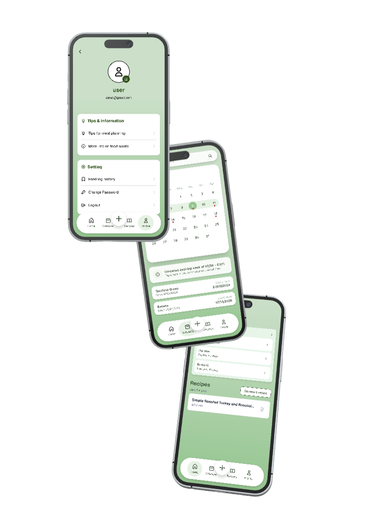

Snap a receipt — SaveRe logs every item and flags what's about to expire.
SaveRe it. Don't waste it.
A month at a glance — every grocery plotted by expiry week, one tap from a fresh receipt scan.
Submission for Princeton Hacks F25!
